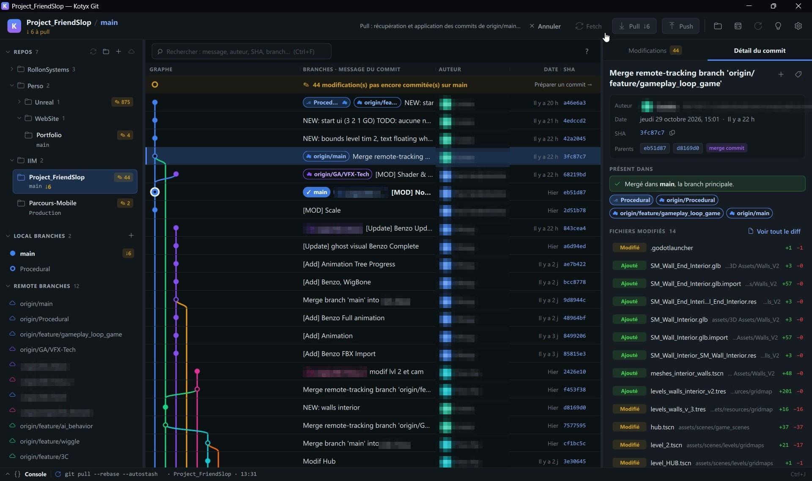
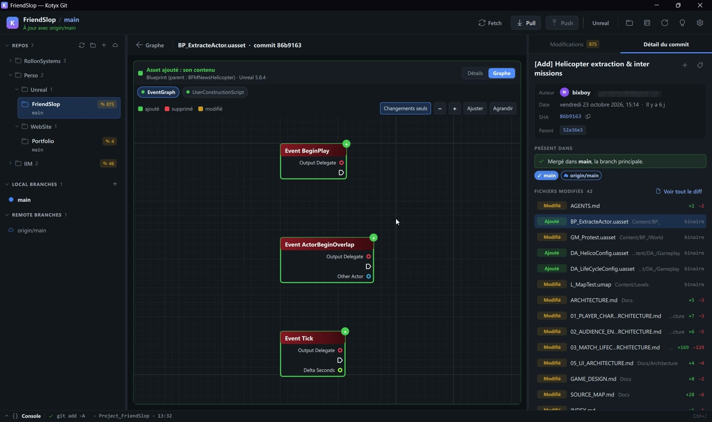
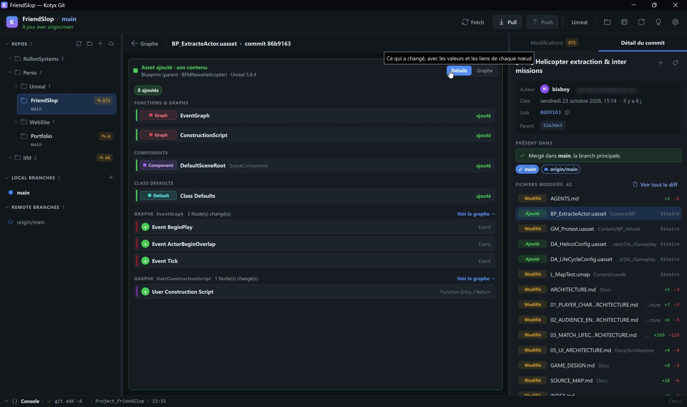
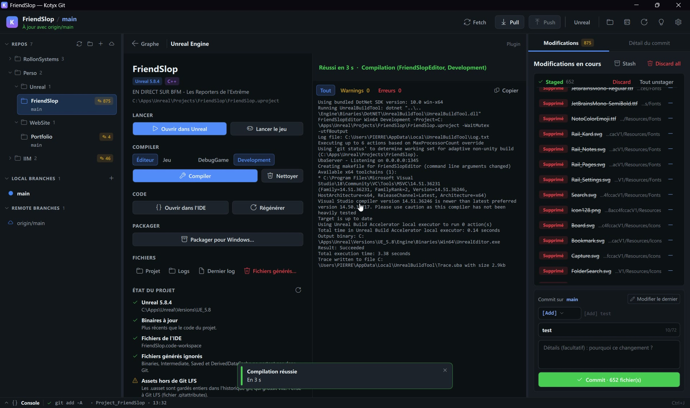
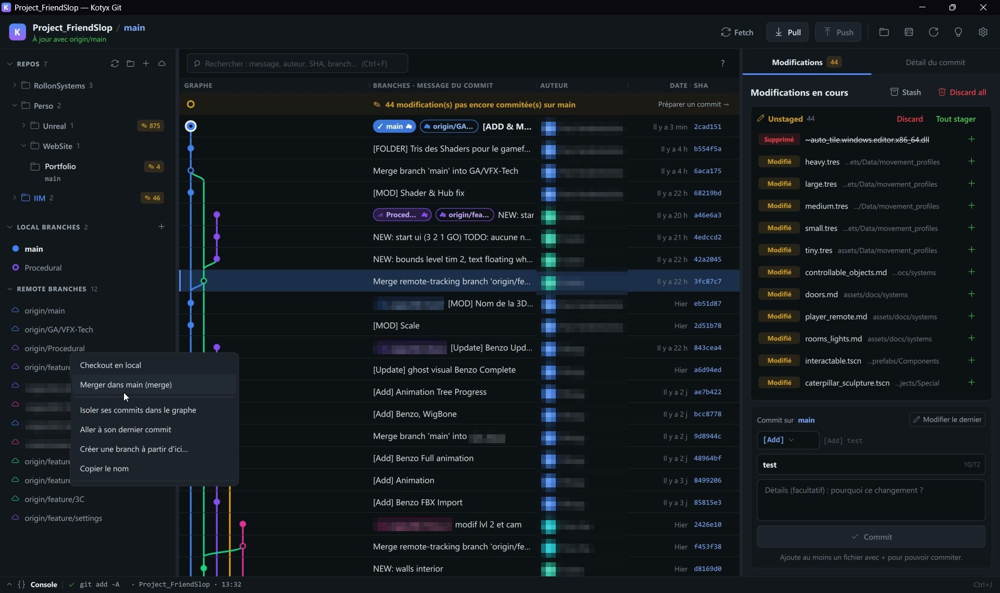
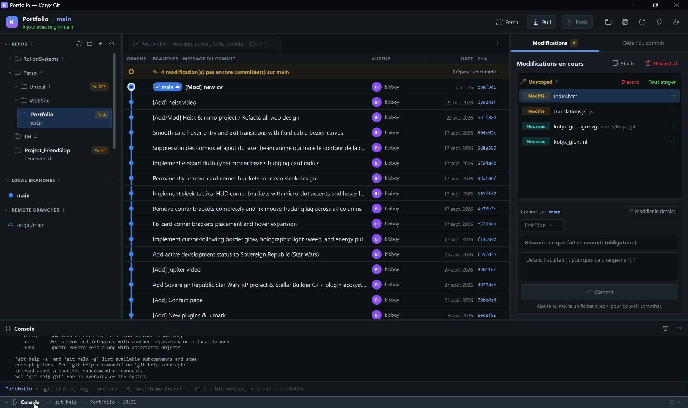
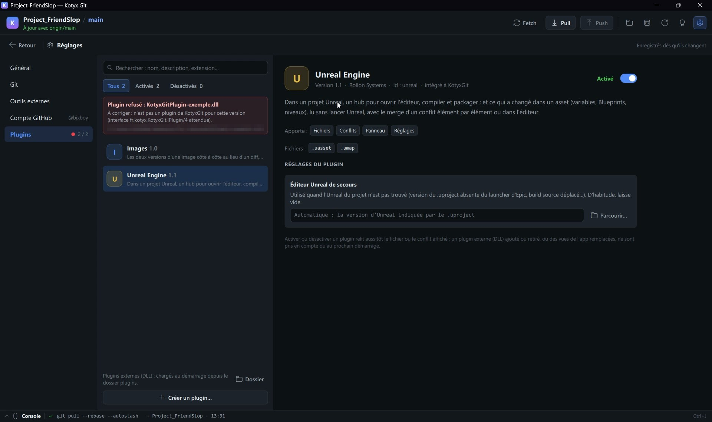

KOTYX GIT EN ACTION
POURQUOI KOTYX GIT ?
Les clients Git classiques traitent les fichiers Unreal Engine (.uasset, .umap) comme des binaires opaques, impossibles à relire ou à fusionner, et noient les conflits de code dans d'immenses blocs illisibles. Kotyx Git est le client Git de bureau que j'ai conçu et développé seul chez Rollon Systems, en C++20 et Qt 6.11 / QML : il suit plusieurs dépôts à la fois et décode les Blueprints d'Unreal Engine 4.0 à 5.7 sans lancer l'éditeur. Je l'utilise sur mes propres dépôts, dont un jeu développé en équipe.
ESSAYER LES DEUX ÉCRANS CLÉS
Reproduction web, sur un projet d'exemple, des deux écrans qui font la différence : cliquez pour choisir ce que vous gardez dans un Blueprint (.uasset) ou dans un conflit C++.
UnrealEditor-Cmd en tâche de fond (merge_asset.py), relit le fichier et vérifie chaque choix. Les nœuds, composants et acteurs ne se rejouent pas par script : ils viennent du fichier de départ.| ÉLÉMENT UNREAL | GAUCHE (BRANCHE DE BASE : MAIN) | DROITE (TON COMMIT : FEATURE) |
|---|---|---|
| Default CharMoveComp.MaxWalkSpeed |
500.0 → 550.0 cm/s
|
500.0 → 650.0 cm/s
|
| Variable StaminaDrainRate (Float) |
Absent
|
Ajoutée — défaut : 12.5
|
| Function Viser (Aim) |
Garder le nom Aim()
|
Renommée Viser() (les appels suivent)
|
| Default CharMoveComp.JumpZVelocity |
420.0 → 600.0
|
420.0 → 520.0
|
Recoil.Scale = 1.15f;
Recoil.Scale = Data->GetRecoilScale();
GitConflicts::Refine (LCS) ⋮SpringSolver.StepSubframe(DeltaTime, 120.f);
ApplyCameraImpulse(Recoil.Scale * 0.5f);
L'INTERFACE EN VRAI
Cliquez sur une capture pour l'agrandir. Les noms et adresses sont floutés.

AGRANDIRGRAPHE MULTI-BRANCHES
Un projet d'équipe avec 12 branches distantes : chaque étiquette a la couleur de sa ligne, et le détail du commit dit où il a été mergé.

AGRANDIRBLUEPRINT DESSINÉ SANS UNREAL
Le graphe d'un .uasset Unreal 5.8.4 lu directement depuis un commit : nœuds, broches et changements colorés.

AGRANDIRDÉTAIL D'UN ASSET
La liste de ce qui a changé dans l'asset : graphes, composants, valeurs par défaut et nœuds.

AGRANDIRHUB UNREAL
Ouvrir, compiler et packager le projet depuis le client, avec l'état du projet : version d'Unreal, binaires, .gitignore et Git LFS.

AGRANDIRACTIONS SUR LES BRANCHES
Clic droit sur une branche : checkout, merge, isolation de ses commits dans le graphe.

AGRANDIRCOMMIT & CONSOLE GIT
Le panneau de commit et une vraie console Git intégrée, ouverte avec Ctrl+J.
DÉCODAGE BINAIRE DES .UASSET SANS LANCER UNREAL
- > Lecture directe du format binaire Unreal (UE 4.0 à 5.7)
UnrealAssets::Parsedécode à la volée lePackageFileSummary, laNameTable, les tables d'Imports/Exports, lesPropertyTaget la sérialisation des broches (UEdGraphPin::Serialize) directement depuis les octets Git (:1,:2,:3), sans jamais ouvrir l'éditeur Unreal. - > Comparaison sémantique intelligente (
SameBytes)Ajouter un simple nom dans un Blueprint décale tous les index de laNameTableet modifie les octets de tout le fichier. Kotyx Git résout les références d'objets et de noms avant de comparer, ignore le bytecode généré (SKEL_) et isole uniquement les vrais changements (variables, valeurs par défaut, fonctions, composants, acteurs et nœuds). - > Validé sur 120 891 nœuds Blueprint d'Unreal 5.7La suite de tests peut parcourir tout le corpus de Blueprints du moteur Unreal Engine 5.7 : 120 891 nœuds lus jusqu'au dernier octet. Un fichier tronqué à n'importe quel endroit ne provoque aucun crash : au pire, il est signalé comme illisible.
// PIPELINE DE LECTURE & FUSION D'UN .UASSET git show :1/:2/:3 lecture des 3 versions en mémoire ▼ UnrealAssets::Parse PackageFileSummary + Name/Export/Import ▼ UEdGraphPin décodage des nœuds, broches & liens ▼ SameBytes & Compare filtrage SKEL_ + alignement par GUID ▼ BlueprintGraph.qml rendu du graphe + focus changements ▼ merge_asset.py fusion headless via UnrealEditor-Cmd ▼ MissingChoices relecture & contrôle post-fusion
ARCHITECTURE ASYNCHRONE & ALGORITHMIQUE
DÉCOUPAGE CHIRURGICAL PAR LCS
Les zones de conflit marquées par Git sont redécoupées via un algorithme de Plus Longue Sous-séquence Commune (LCS) pour isoler les lignes réellement différentes. Le fichier résolu est réassemblé en octets bruts (QByteArray) afin de préserver l'encodage et les fins de ligne CRLF/LF à l'octet près.
LECTURES HORS THREAD UI
Les lectures Git s'exécutent dans un QThreadPool, pas sur le thread d'interface, avec fusion automatique des requêtes (Status | History | Focus) et un compteur de génération qui écarte les snapshots périmés.
GRAPHE MULTI-BRANCHES & FOCUS
Calcul déterministe des couloirs de branches, détection d'intégration dans main, et mode Focus en un clic qui filtre le graphe pour n'afficher que les commits propres à la branche sélectionnée.
SÉCURITÉ & ZÉRO JETON SUR DISQUE
Délégation complète à Git Credential Manager : Kotyx Git n'écrit aucun mot de passe ni jeton sur le disque ou dans les logs. Le jeton reste en mémoire pour appeler l'API, et le client HTTP refuse toute requête hors de https://api.github.com.
HUB UNREAL INTÉGRÉ
Dès qu'un .uproject est trouvé, un hub ouvre l'éditeur, compile avec tri Warnings / Erreurs, package pour Windows et contrôle l'état du projet : binaires à jour après un pull, .gitignore, Git LFS. La compilation est refusée tant que l'éditeur est ouvert.
LISIBLE PAR LES DÉBUTANTS
Mode guidé, erreurs Git traduites avec la marche à suivre, confirmation avant toute action destructrice et bouton « Annuler l'opération » pendant un merge ou un rebase : les artistes et game designers d'une équipe peuvent s'en servir aussi.
ARCHITECTURE DE PLUGINS & SURCHARGE QML
- > Un cœur 100% agnostique des formatsLe cœur de Kotyx Git (
core,viewmodels) ne contient aucunif (Unreal)ni logique liée aux images : tout passe par l'interface C++ pureIPlugin/IPluginHost, qu'il s'agisse d'un plugin intégré ou d'une DLL externe chargée viaQPluginLoaderavec contrôle strict de version d'ABI (KOTYXGIT_PLUGIN_IID). - > Générateur de SDK intégré à l'applicationDepuis Réglages > Plugins, le bouton « Créer un plugin… » génère sur le disque un projet C++/xmake autonome prêt à compiler en DLL, incluant les en-têtes du SDK (
Plugin.h,PluginHost.h) et une copie des vues QML de l'application. - > Hooks Git, Thèmes & Surcharge de vues QML avec FallbackUn plugin peut ajouter des boutons d'en-tête, des actions clic droit, bloquer un commit non conforme (
CheckCommit), fournir des thèmes complets ou remplacer n'importe quelle vue QML de l'application (QmlOverrides) via un intercepteur d'URL doté d'un repli automatique sécurisé si la vue custom échoue au chargement.

AGRANDIRPLUGINS & CONTRÔLE D'ABI
Les plugins Images et Unreal, et une DLL refusée parce qu'elle ne correspond pas à l'interface attendue (IPlugin/4).
// ARCHITECTURE MODULAIRE & 8 SUITES DE TESTS C++ QML (src/ui/qml) └──▶ gitApp (commands · workspace · repo · conflicts) ├──▶ IPlugin / DLL (Images · Unreal · Custom) └──▶ Core C++20 pur (sans QObject) // SUITES DE TESTS AUTOMATISÉS (KotyxGitTests) ✓ UnrealAssetsTests (+ 120 891 nœuds UE 5.7) ✓ UnrealProjectTests (.uproject, cibles, logs) ✓ GitConflictsTests (LCS, encodage, octets) ✓ GitLaneCalculatorTests (couloirs multi-branches) ✓ GitParsersTests (0x1E/0x1F, erreurs FR) ✓ GitHubParsersTests (GCM, pagination API) ✓ RepoTreeTests (arborescence drag & drop) ✓ PluginInfoTests (validation ABI & métadonnées)